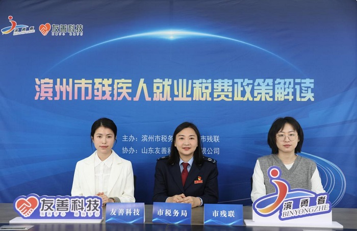
滨州市举办残疾人就业税费政策线上解读直播活动
滨州市残联、市税务局联合开展残疾人就业税费政策线上解读直播，精准推送惠企助残政策，助力残疾人高质量就业。

共植希望林·助残同富行 合肥市残联赴蜀山区残疾人农疗基地开展助残融合活动
合肥市残联联动爱心企业开展助残融合活动，揭牌残疾人帮扶性就业基地，共植希望林，全力推动残疾人就业创业工作再上新台阶。

丁薛祥在全国高校毕业生等青年就业创业工作视频会议上强调 促进高校毕业生高质量充分就业 更好服务大局、服务民生、服务发展
全国高校毕业生等青年就业创业工作视频会议在京举行，部署促进高校毕业生高质量充分就业各项工作，全力保障青年就业大局稳定。

广东：三地联动春风送岗 助残启航共促就业——2026年广东省残疾人就业援助季暨"春风送岗 粤助启航"（粤西片区）系列活动在湛江启动
湛江、阳江、茂名三地联动举办残疾人就业援助季活动，搭建跨区域就业平台，提供大量优质岗位，助力粤西残疾人高质量就业。

为"春天的事业"添砖加瓦：阜阳市临泉县探索多元化路径助力残疾人就业
临泉县通过政策引导、企业参与、社会支持的多元模式，拓宽残疾人就业渠道，让更多残疾人融入产业体系、实现稳定就业。

中国残联就业服务指导中心组织开展学雷锋助残志愿服务联学共建活动
学雷锋助残志愿服务联学共建活动举办，弘扬雷锋精神，开展残疾人就业创业帮扶与技能培训，凝聚助残服务合力。
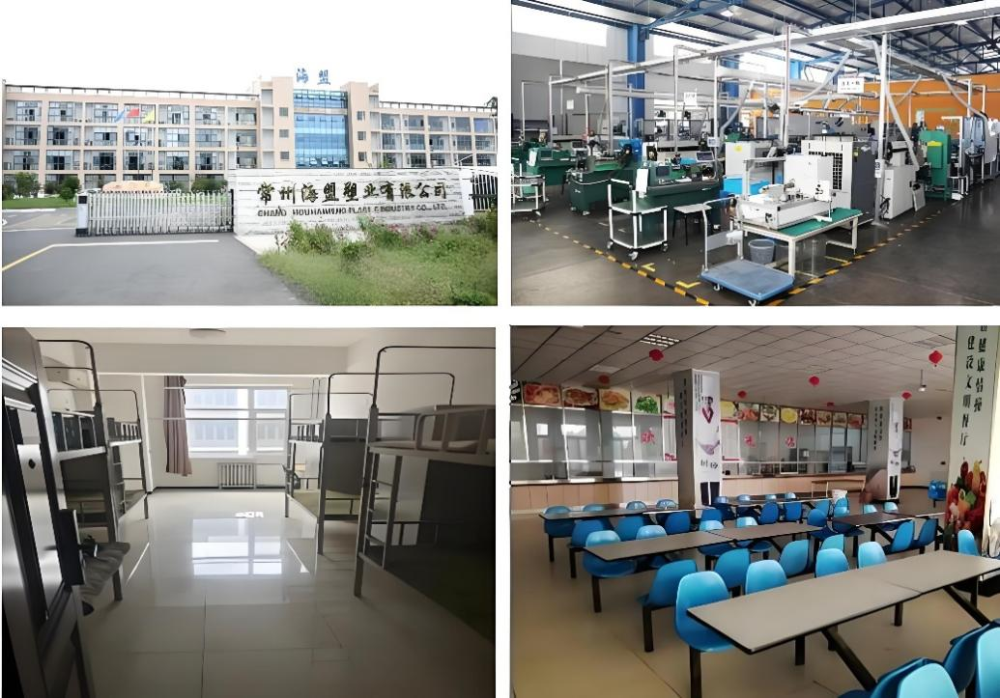
江苏常州残疾人集中就业企业，福利待遇好，快来报名吧！！！
常州海盟塑业有限公司招聘残疾人员工，提供优质岗位与完善福利，恒温车间、五险一金、食宿全包，欢迎符合条件者报名。
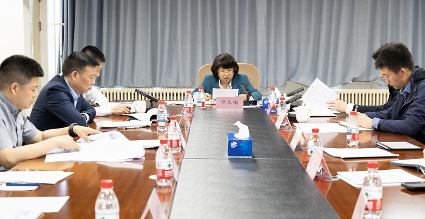
中国残联召开2025年高校残疾人大学生毕业工作视频推进会
中国残联召开2025年高校残疾人大学生毕业工作视频推进会，部署高校残疾人大学生就业工作。
第35次全国助残日 中国残联就业服务平台开展多项助残活动
中国残联就业服务平台开展多项助残活动，助力残疾人就业。
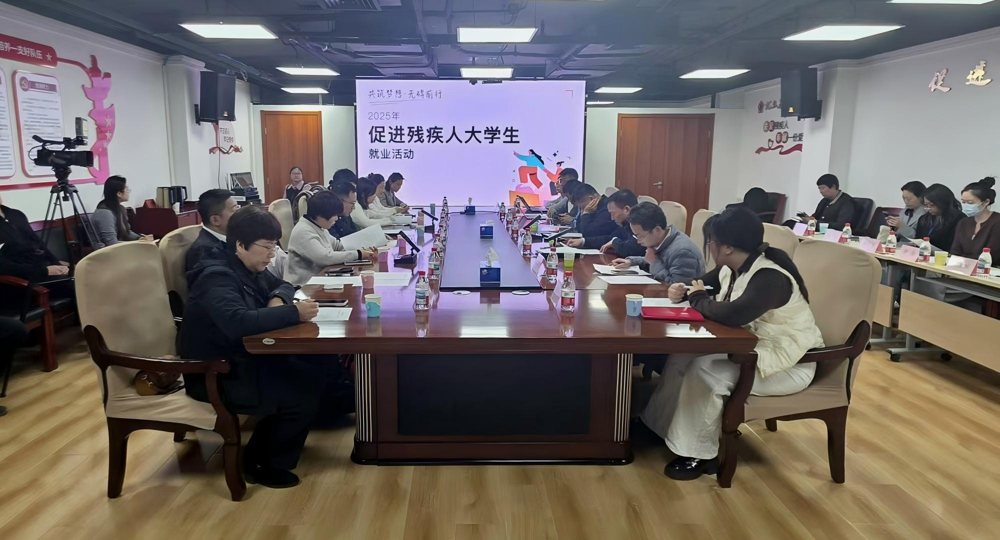
"筑梦职场·无碍前行"2025年促进残疾人大学生就业活动在京启动
中国残联就业服务平台与BOSS直聘联合承办，推动残疾人大学生高质量就业。
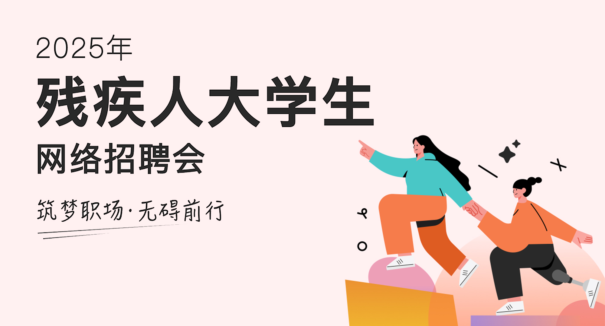
筑梦职场·无碍前行 2025年残疾人大学生网络招聘会万余职位已上线，速来投递！
中国残联就业服务平台与BOSS直聘联合举办，提供十万余个岗位。
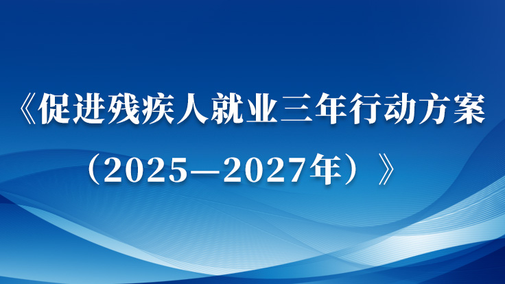
促进残疾人就业三年行动方案（2025—2027年）
政府扶持、部门协同、市场推动，多渠道多形式促进残疾人就业。
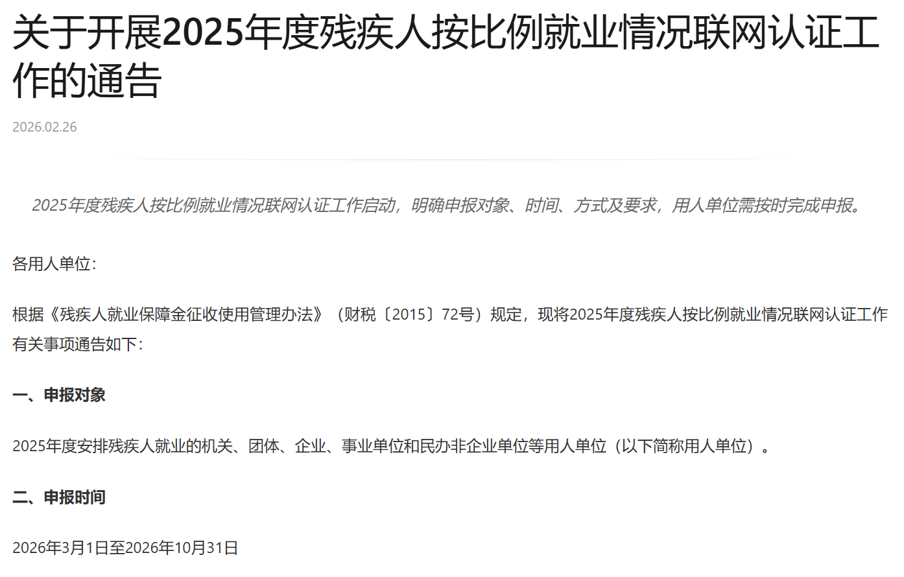
关于开展2025年度残疾人按比例就业情况联网认证工作的通告
2025年度残疾人按比例就业情况联网认证工作启动，明确申报对象、时间、方式及要求，用人单位需按时完成申报。
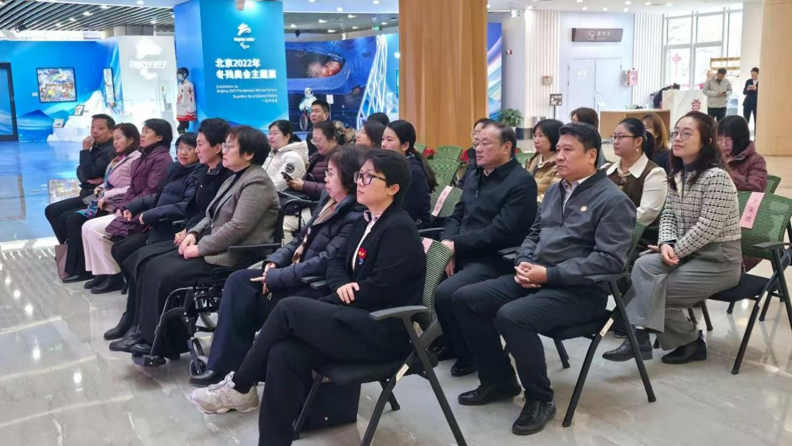
美丽工坊新春交流活动在京举办
2月12日，农历马年春节即将到来之际，一场以"数智赋能匠心传承，助力残疾女性就业增收"为主题的美丽工坊2026年新春交流活动在北京市残疾人服务示范中心举办。
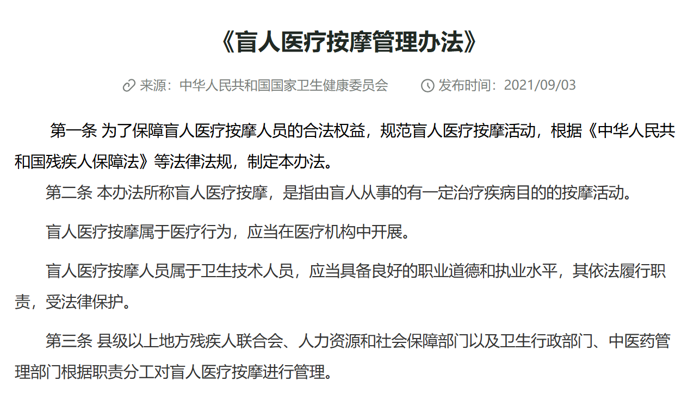
盲人医疗按摩管理办法
《盲人医疗按摩管理办法》规范盲人医疗按摩活动，保障盲人医疗按摩人员权益。
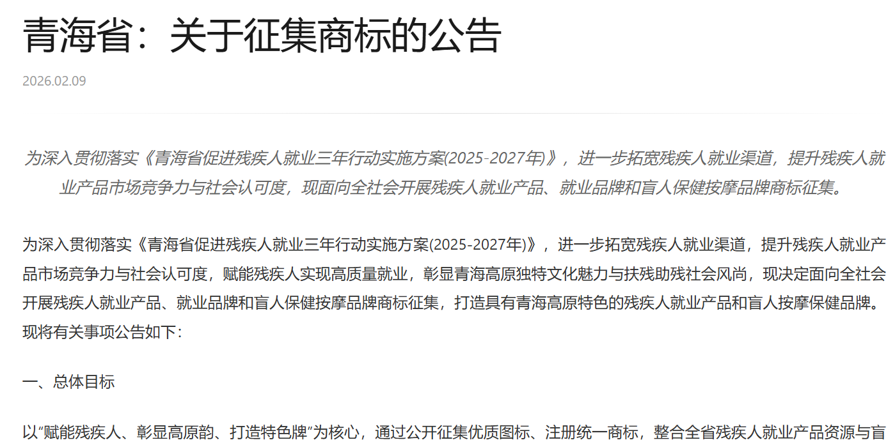
青海省：关于征集商标的公告
为深入贯彻落实《青海省促进残疾人就业三年行动实施方案(2025-2027年)》，进一步拓宽残疾人就业渠道，提升残疾人就业产品市场竞争力与社会认可度，现面向全社会开展残疾人就业产品、就业品牌和盲人保健按摩品牌商标征集。
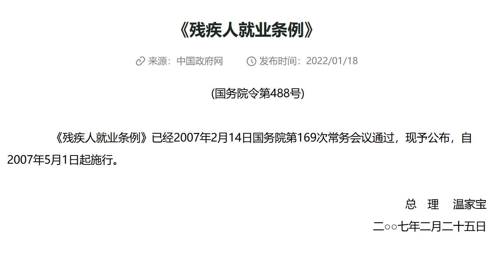
残疾人就业条例
《残疾人就业条例》保障残疾人就业权利，促进残疾人平等就业。
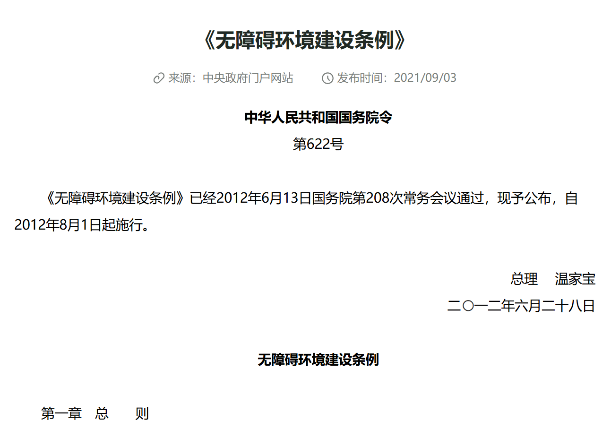
无障碍环境建设条例
《无障碍环境建设条例》为残疾人平等参与社会生活创造无障碍环境。
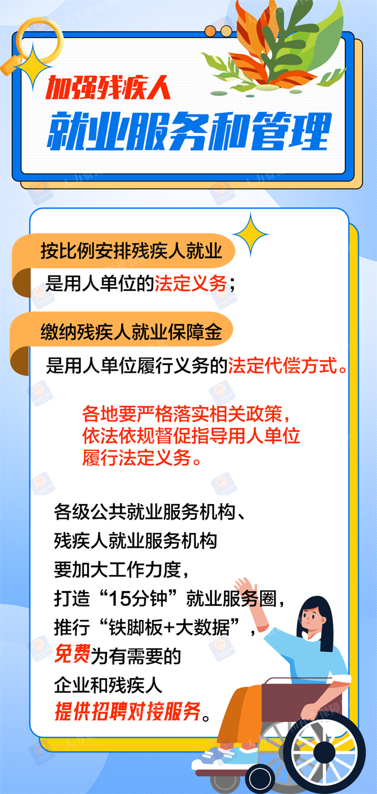
促进残疾人就业，实用服务一图get！
一图读懂促进残疾人就业实用服务，助力残疾人更好地实现就业创业梦想。

中国残联办公厅关于明确按比例就业联网认证"跨省通办"工作有关事项的通知
明确按比例就业联网认证"跨省通办"工作有关事项，方便用人单位办理残疾人就业认证。
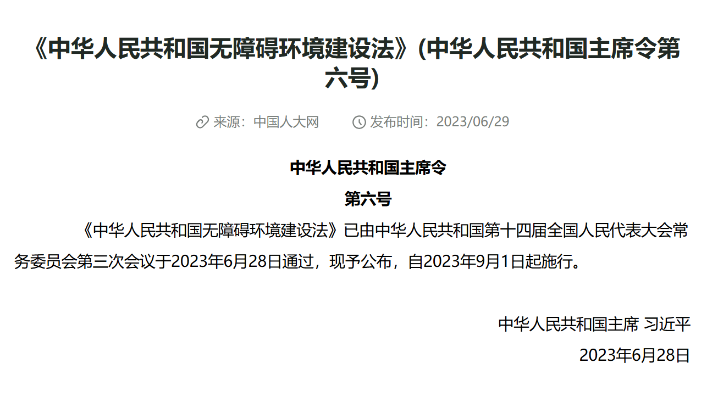
中华人民共和国无障碍环境建设法
《中华人民共和国无障碍环境建设法》正式实施，为残疾人平等参与社会生活提供法律保障。

关于残疾人就业法律法规政策，你想知道都在这里
全面梳理残疾人就业相关法律法规政策，为您答疑解惑，保障残疾人就业权益。
北京市用人单位招用残疾人岗位补贴和社会保险补贴政策问题问答
北京市用人单位招用残疾人可享受岗位补贴和社会保险补贴政策，本文为您解答常见问题。
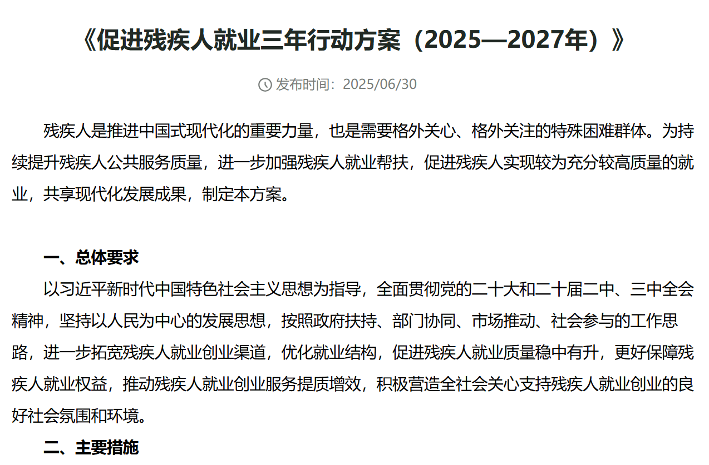
促进残疾人就业三年行动方案（2025—2027年）
深入实施促进残疾人就业三年行动方案，助力残疾人实现更充分更高质量就业。

国办印发方案，推出4方面13项政策举措 着力解决残疾人就业急难愁盼
国办印发《促进残疾人就业三年行动方案》，推出4方面13项政策举措，着力解决残疾人就业急难愁盼问题。

拓宽发展路径 托举稳稳幸福生活——2025年滁州市残疾人教育就业和社会保障工作回眸
2025年，滁州市残联以增进残疾人福祉、促进残疾人全面发展为主线，在教育公平、就业增收、服务赋能、社会保障等方面持续精准发力，助力每一位残疾人朋友拥抱梦想、融入社会。
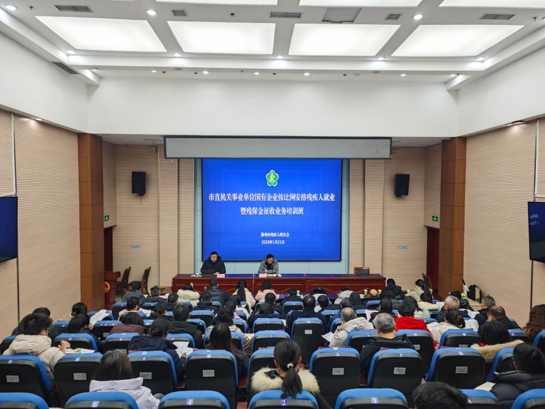
滁州市残联举办市直机关事业单位和国有企业按比例安排残疾人就业暨残保金征收业务培训班
1月21日上午，由滁州市残联精心组织的市直机关事业单位和国有企业按比例安排残疾人就业暨残保金征收业务培训班顺利举办，市残联党组成员、副理事长张宏清出席活动并作开班动员讲话。
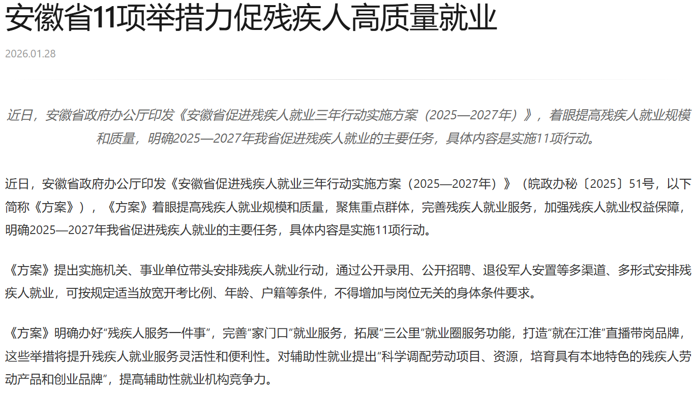
安徽省11项举措力促残疾人高质量就业
近日，安徽省政府办公厅印发《安徽省促进残疾人就业三年行动实施方案（2025—2027年）》，着眼提高残疾人就业规模和质量，明确2025—2027年我省促进残疾人就业的主要任务，具体内容是实施11项行动。
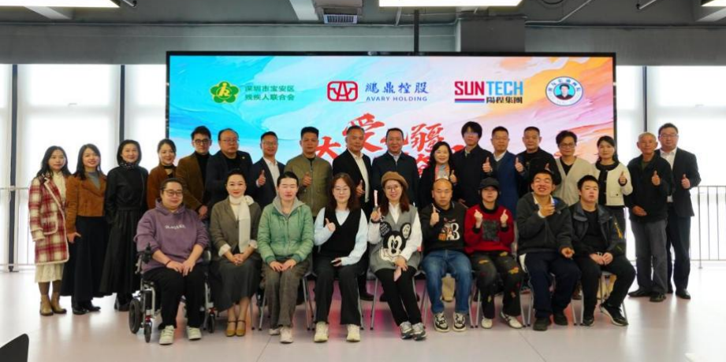
阳程折翼天使画院"定岗优培"成果展在深成功举行
1月9日下午， "大爱无疆、自强奋斗"阳程折翼天使画院"定岗优培"油画成果展在深圳宝安区金宝科创中心启幕，各界嘉宾齐聚现场，共赏艺术，共商助残。
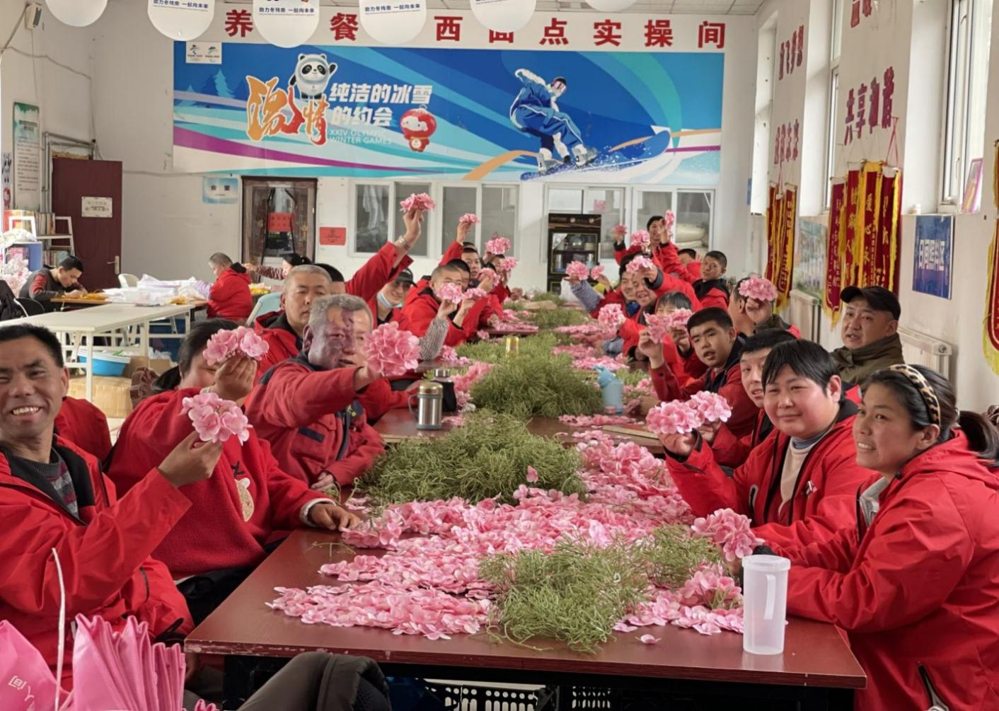
河北构建多层次辅助性就业体系 托起困难残疾人"就业梦"
智力残疾、精神残疾及重度肢体残疾群体，常因社会适应能力较弱或出行不便，难以踏入竞争性劳动力市场。河北构建多层次辅助性就业体系，为他们铺就就业增收、实现自我的阳光大道。